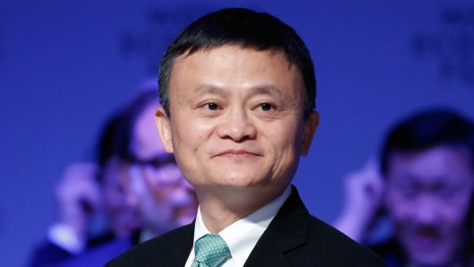

Jack Ma
Owner and Founder of Alibaba

A former English teacher, Jack Ma cofounded and chairs Alibaba Group, one of the world's largest e-commerce businesses
- 2004 - Ma was honoured as one of the "Top 10 Economic Personas of the Year" by China Central Television (CCTV).
- 2005 - the World Economic Forum selected Ma as a "Young Global Leader".
- 2005 - Fortune also selected him as one of the "25 Most Powerful Businessperson in Asia"
- 2007 - Businessweek also selected him as a "Businessperson of the Year"
- 2008 - Barron's featured him as one of the 30 "World's Best CEOs"
- 2009 - Time magazine listed Ma as one of the world's 100 most powerful people. In reporting Ma's accomplishments, Adi Ignatius, former Time senior editor and editor-in-chief of the Harvard Business Review, noted that "the Chinese Internet entrepreneur is soft-spoken and elf-like — and he speaks really good English" and remarked that "Taobao.com, Mr. Ma's consumer-auction website, conquered eBay in China."[38] He was also included in this list in 2014.
- 2010 - Ma was selected by Forbes Asia as one of Asia's Heroes of Philanthropy for his contribution to disaster relief and poverty.
- 2011 - it was announced that one of his companies had gained control of Alipay, formerly a subsidiary of Alibaba Group, so as to "comply with Chinese law governing payment companies in order to secure a license to continue operating Alipay.
- 2013 - he became chairman of the board for The Nature Conservancy's China Program; this was one day after he stepped down from Alibaba as company CEO.
- 2014 - he was ranked as the 30th most powerful person in the world in an annual ranking published by Forbes.
- 2015 - Asian Award honoured him with the Entrepreneur of the Year award.
- 2017 - Fortune ranked Ma second on its World's 50 Greatest Leaders list.
- 2017 - a KPMG survey ranked Ma third in global tech innovation visionary survey.
- 2018 - Ma was given an honorary degree of Doctor of Social Sciences honoris causa in recognition of his contributions to technology, society and the world by University of Hong Kong.
- 2018 - Ma received an honorable doctoral degree from professors Yaakov Frenkel and Yaron Oz at the Tel Aviv University in Tel Aviv, Israel.
Awards and honours:
"Jack Ma is the founder of the Jack Ma Foundation, a philanthropic organization focused on improving education, the environment and public health."